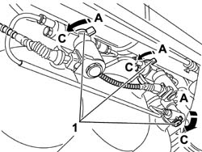

1042A02 C.N.G. - FUEL SYSTEM SAFETY CHECK
- Path
- Procedures > 10 ENGINE UNIT > 1042 METHANE GAS CANNISTER AND TUBES > 1042A METHANE GAS CANNISTER AND TUBES FOR RE-CHARGING > 1042A02 C.N.G. - FUEL SYSTEM SAFETY CHECK
- Kind
- repair procedure (removal / refitting; the operation number is the code)
- Applies to
- engines: 1.6 16v; production: da 06/04; only with equipment: BIPOWER
- Interactive page
- https://sloeber94.github.io/elrnDB-fMltpl/en/#/186007226
Applies to: engines: 1.6 16v; production: da 06/04; only with equipment: BIPOWER
In the case of repairs to the CNG system components, the high and/or low pressure systems must be drained as follows for safety reasons.
1. Close the manual valves on the CNG canisters.

Applies to: engines: 1.6 16v; production: da 06/04; only with equipment: BIPOWER
PROCEDURE FOR DRAINING HIGH PRESSURE CIRCUIT.
Disconnect the electrical connection for the pressure sensor on the pressure reducer.
Select Methane starting using the CNG\methane switch on the dashboard to the right of the steering wheel.
Disconnect the battery negative terminal and positive terminal;
Start up the engine and wait for it to stall.
Start the engine again and wait for it to stall again to remove the residual gas in the pipes.
Connect the electrical connection for the pressure sensor.
Connect the EXAMINER diagnostic equipment and check that the methane pressure in the pipe is close to zero.
Use am EXAMINER to delete any errors stored in the control unit.
PROCEDURE FOR DRAINING LOW PRESSURE CIRCUIT.
Disconnect the connection for the methane cut-off valve on the reduction unit.
Select Methane starting using the CNG\methane switch on the dashboard to the right of the steering wheel.
Disconnect the battery negative terminal and positive terminal;
Start up the engine and wait for it to stall.
Start the engine again and wait for it to stall again to remove the residual gas in the pipes.
The irregular switching off of the engine could cause certain errors to be memorized (Petrol pump relay error, injector relay error, etc.).
Use am EXAMINER to delete any errors stored in the control unit.
PROCEDURE FOR DRAINING HIGH OR LOW PRESSURE CIRCUIT ON A VEHICLE THAT WILL NOT START
Take the vehicle outside the workshop to an open area and position at a minimum safety distance of 5 metres from other vehicles and from electrical systems and equipment.
Close the manual valves on the CNG canisters.
Put on a helmet with face mask to UNI-EN 166 standars and winter gloves to UNI-EN 388 e UNI-EN 511 standards, loosen the fitting on the pipe to be serviced slowly and gradually, taking care not to come into direct contact with the CNG jet in the pipe.
Before carrying out the service operation, disconnect the battery negative terminal and positive terminal again, join them together and connect the vehicle to earth.
At the end of the service operation, remember to delete any errors stored in the control unit.
Topics that link to this page (17)
- 1040B32 FUEL FILLER PIPE UNION SLEEVE - R + R
- 1042A16 CNG CYLINDER UNIT - R R
- 1042A20 INJECTION SYSTEM SOLENOID ON CYLINDER R R
- 1042A24 CNG INJECTION SYSTEM ONE-WAY VALVE - R R
- 1042A43 CNG REPRESSURIZING PIPE FROM REPRESSURIZING VALVE TO SINGLE-ACTING VALVE - R.R.
- 1042A50 PIPE (1) CONNECTING CNG RECHARGING SYSTEM SOLENOIDS - R R
- 1042A70 LEFT CYLINDER OF CNG CYLINDER UNIT R R
- 1042A72 CENTRAL CYLINDER OF CNG CYLINDER UNIT R R
- 1042A74 RIGHT CYLINDER OF CNG CYLINDER UNIT R R
- 1042B10 CNG SUPPLY LINE FROM SOLENOID TO PRESSURE REDUCTION UNIT - R R
- 1044E10 CNG INJECTION SYSTEM PRESSURE REDUCTION UNIT - R R
- 1044E12 GAS PRESSURE CONTROL VALVE ON GAS CIRCUIT - REPLACE
- 1044E15 SOLENOID VALVE COIL ON CNG INJECTION SYSTEM' PRESSURE REDUCTION UNIT - R.R.
- 1044E20 CNG INJECTION SYSTEM PRESSURE REDUCTION UNIT MOUNTING BRACKET - R.R.
- 1058A44 CNG/FUEL SWITCH - R R
- 1058A46 CNG PRESSURE/TEMPERATURE SENSOR ON SINGLE MANIFOLD PIPE - R.R.
- 1058A60 SINGLE CNG MANIFOLD PIPE COMPLETE WITH INJECTORS - R R